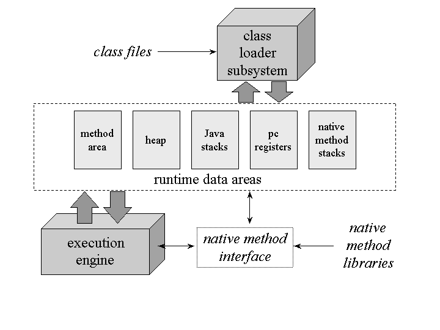
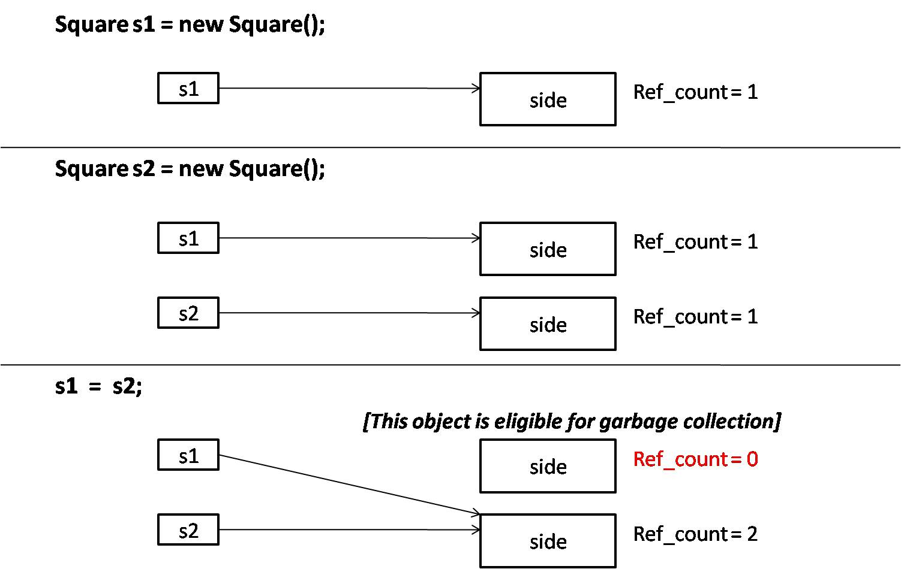
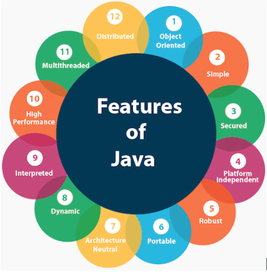
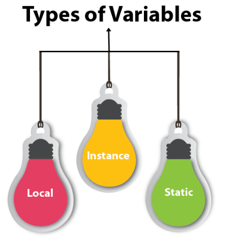
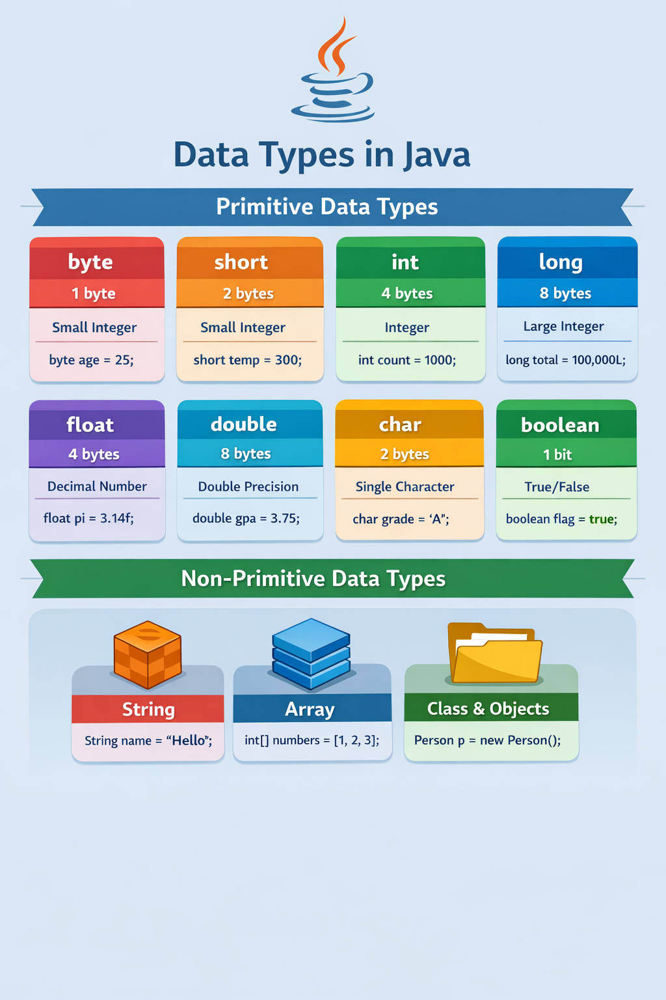
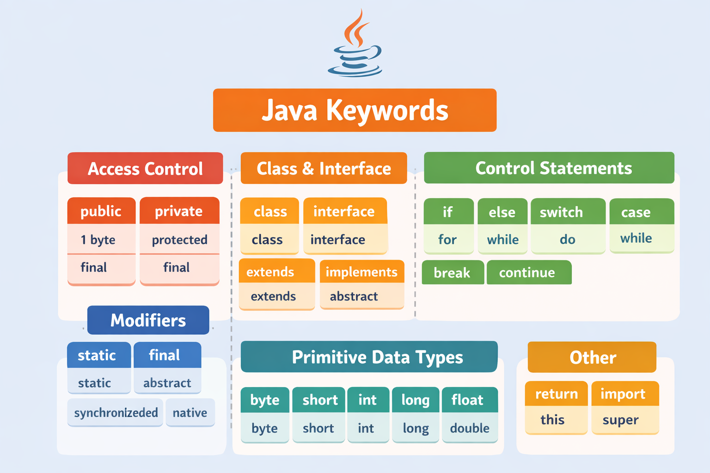
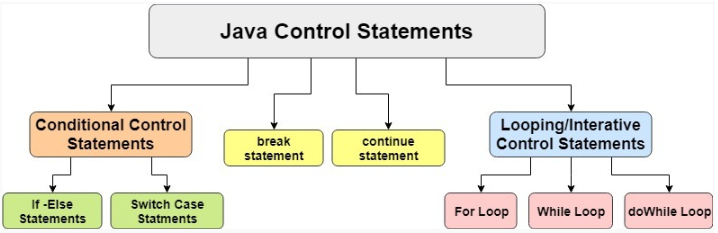

What is Java?
Java is a programming language and a platform. Java is a high level, robust, object-oriented and secure programming language.
Java was developed by Sun Microsystems (which is now the subsidiary of Oracle) in the year 1995. James Gosling is known as the father of Java. Before Java, its name was Oak. Since Oak was already a registered company, James Gosling and his team changed the name from Oak to Java.
JRE, JDK & JVM
JRE (Java Runtime Environment)
Runtime Environment. It is a package of everything necessary to run a compiled Java program, including the Java Virtual Machine (JVM), the Java Class Library, the java command, and other infrastructure. However, it cannot be used to create new programs.

JDK (Java Development Kit)
Java Development Kit, the full-featured SDK for Java. It has everything the JRE has, but also the compiler (javac) and tools (like javadoc and jdb). It is capable of creating and compiling programs.
JVM Memory Structure
JVM Architecture
Heap Area
Heap stores the actual objects. It is created when the JVM starts up. The user can control the heap if needed. It can be of fixed or dynamic size. When you use a new keyword, the JVM creates an instance for the object in a heap. While the reference of that object stores in the stack. There exists only one heap for each running JVM process. When the heap becomes full, the garbage is collected. (Garbage collection in heap areas is mandatory.)
For Example ::
The above statement creates the object of Scanner class which gets allocated to heap whereas the reference ‘sc’ gets pushed to the stack
Stack Area
Stack Area generates when a thread is created. It can be of either fixed or dynamic size. The stack memory is allocated per thread. It is used to store data and partial results. It contains references to heap objects. It also holds the value itself rather than a reference to an object from the heap. The variables which are stored in the stack have certain visibility, called scope
Method Area
It is a logical part of the heap area and is created on virtual machine startup. This memory is allocated for class structures, method data and constructor field data, and also for interfaces or special methods used in class. Heap can be of fixed or dynamic size depending upon the system’s configuration.
Native Stack
Also called as C stacks, native method stacks are not written in Java language. This memory is allocated for each thread when it's created. And it can be of fixed or dynamic nature.
Program counter (PC) registers:
Each JVM thread which carries out the task of a specific method has a program counter register associated with it. The non native method has a PC which stores the address of the available JVM instruction whereas in a native method, the value of the program counter is undefined. PC register is capable of storing the return address or a native pointer on some specific platform.
Garbage Collection
JVM triggers this process and as per the JVM garbage collection process is done or else withheld. It reduces the burden of programmers by automatically performing the allocation or deallocation of memory. Note: System.gc() and Runtime.gc() are the methods which requests for Garbage collection to JVM explicitly but it doesn’t ensure garbage collection as the final decision of garbage collection is of JVM only.
Features of Java
First Java Program
class Simple {
public static void main(String args[]) {
System.out.println("Hello Java");
}
}🔍 Detailed Explanation (Every Point)
class
👉 This line tells Java:
“Create a class named Simple.”
This is the most important line in any Java program.
🔹 public
An access modifier.
Makes the method accessible from anywhere.
Required so the JVM (Java Virtual Machine) can call it.
🔹 static
Means the method belongs to the class, not to an object.
JVM can call main() without creating an object.
🔹 void
Return type of the method.
void means the method returns nothing.
🔹 main
The entry point of the program.
Execution of a Java program always starts from main().
🔹 String args[]
Used to accept command-line arguments.
String → data type
args → array name
[] → indicates an array
This line prints output to the screen.
🔹 System
A predefined class in java.lang package.
Provides system-related resources.
🔹 out
A static object of PrintStream.
Represents the standard output (screen/console).
🔹 println
A method of PrintStream.
Prints the text and moves the cursor to a new line.
🔹 "Hello Java"
A String literal (text).
Displayed as output.
✅ Java Operators Table
| Category | Operators | Purpose / Meaning | Example |
|---|---|---|---|
| Arithmetic | + , - , * , / , % | Math operations | a + b, a % b |
| Relational (Comparison) | == , != , > , < , >= , <= | Compare values (returns true/false) | a > b |
| Logical | && , || , ! | Boolean logic operations | (a > b && b > 0) |
| Assignment | = , += , -= , *= , /= , %= | Assign values / shorthand assignment | a += 5 |
| Unary | ++ , -- , + , - , ! | Single operand operations | ++a, --b |
| Bitwise | & , | , ^ , ~ | Bit-level operations | a & b |
| Shift | << , >> , >>> | Shift bits left/right | a << 2 |
| Ternary | ? : | Short if-else | (a > b) ? a : b |
| Type Comparison | instanceof | Check object type | obj instanceof String |
Java Variables
A variable is a container that holds data.
- Local: A variable declared inside the body of the method is called local variable. You can use this variable only within that method and the other methods in the class aren't even aware that the variable exists.
- Instance: A variable declared inside the class but outside the body of the method, is called an instance variable. It is not declared as static
- Static: Declared with
staticis called a static variable. It cannot be local. You can create a single copy of the static variable and share it among all the instances of the class. Memory allocation for static variables happens only once when the class is loaded in the memory.
public class A {
static int m = 100; // static variable
void method() {
int n = 90; // local variable
}
public static void main(String args[]) {
int data = 50; // instance variable
}
}Java Data types
Java divides its data types into two main categories:
Primitive Data Types ::
These are the basic built-in types that store simple values.
Non-Primitive Data Types ::
These include Objects, Strings, Arrays, Classes, Interfaces.They store references (addresses) to the actual data in memory.
Java Keywords
abstract Java Keyword
The abstract keyword is used to declare a class or a method as abstract. An abstract class is a class that is declared abstract means it may or may not include abstract methods. Abstract classes cannot be instantiated, but they can be subclassed. An abstract method is a method that is declared without an implementation.
assert Java Keyword
Assert describes a predicate (a true-false statement) placed in a Java program to indicate that the developer thinks that the predicate is always true at that place. If an assertion evaluates to false at run-time, an assertion failure results, which typically causes execution to abort. Optionally enable by ClassLoader method.
boolean Java Keyword
Defines a boolean variable for the values "true" or "false" only. By default, the value of boolean primitive type is false. This keyword is also used to declare that a method returns a value of the primitive type boolean.
break Keyword
The break keyword is used to prematurely exit a for, while, or do while loop or to mark the end of a case block in a switch statement.
Java Keyword
The byte keyword is used to declare a field that can hold an 8-bit signed two's complement integer. This keyword is also used to declare that a method returns a value of the primitive type byte.case Java Keyword
A statement in the switch block can be labeled with one or more case or default labels. The switch statement evaluates its expression, then executes all statements that follow the matching case label.catch Java Keyword
Used in conjunction with a try block and an optional finally block. The statements in the catch block specify what to do if a specific type of exception is thrown by the try block.char Java Keyword
The char keyword is used to declare character variable. char is a Java primitive type. In Java, the data type used to store characters is char. The char data type is a single 16-bit Unicode character. It has a minimum value of '\u0000' (or 0) and a maximum value of '\uffff' (or 65,535 inclusive). The Wrapper Character class represents char primitive type as an object.class Java Keyword
The class keyword is used to define the classes in Java. A class is a group of objects which have common properties. It is a template or blueprint from which objects are created. In short, a class is the specification or template of an object.continue Java Keyword
Used to resume program execution at the end of the current loop body. If followed by a label, continue resumes execution at the end of the enclosing labeled loop body. The continue statement skips the current iteration of a for, while or do-while loop. The unlabeled form skips to the end of the innermost loop's body and evaluates the boolean expression that controls the loop.default Java Keyword
The default keyword can optionally be used in a switch statement to label a block of statements to be executed if no case matches the specified value; see a switch. Alternatively, the default keyword can also be used to declare default values in a Java annotation. From Java 8 onwards, the default keyword is also used to specify that a method in an interface provides the default implementation of a method.do Java Keyword
The do keyword is used in conjunction with while to create a do-while loop, which executes a block of statements associated with the loop and then tests a boolean expression associated with the while. If the expression evaluates to true, the block is executed again; this continues until the expression evaluates to false.double Java Keyword
The double keyword is used to create a double primitive type. A double variable may store a double−precision floating point value. Double precision, as denoted by the double keyword, uses 64 bits to store a value. Double precision is actually faster than single precision on some modern processors that have been optimized for high-speed mathematical calculations. The Double class wraps a value of the primitive type double in an object. An object of type Double contains a single field whose type is double.else Java Keyword
The Java if-else statement also tests the condition. It executes the if block if a condition is true otherwise else block, is executed. Syntex if(condition){ statement 1; //code if condition is true }else{ statement 2; //code if condition is false }enum Java Keyword
An enum Java keyword used to declare an enumerated type. Enumerations extend the base class Enum. public enum Day { SUNDAY, MONDAY, TUESDAY, WEDNESDAY, THURSDAY, FRIDAY, SATURDAY; }extends Java Keyword
The extends keyword is used in a class or interface declaration to indicate that the class or interface being declared is a subclass of the class or interface whose name follows the extends keyword.final Java Keyword
The final keyword in Java is used to restrict the user. The final keyword can be used with variable, method, and class. The final keyword may be applied to a variable, indicating the value of the final variable can not be changed (It will be constant). The final keyword may be applied to a class, indicating the class may not be extended (subclassed). The final keyword may be applied to a method, indicating the method may not be overridden in any subclassfinally Java Keyword
The finally used to define a block of statements for a block defined previously by the try keyword. The finally block is executed after execution exits the try block and any associated catch clauses regardless of whether an exception was thrown or caught, or execution left method in the middle of the try or catch blocks using the return keyword. Java finally block is a block that is used to execute important code such as closing connection, streametc. Java finally block is always executed whether an exception is handled or not. Java finally block follows try/catch block. For each try block, there can be zero or more catch blocks, but only one finally block. The finally block will not be executed if program exits(either by calling System.exit() or by causing a fatal error that causes the process to abort).float Java Keyword
The float keyword is used to declare float primitive variable. A float variable may store a single−precision floating point value. The type float specifies a single-precision value that uses 32 bits of storage. Single precision is faster on some processors and takes half as much space as double precision, but will become imprecise when the values are either very large or very small.for Java Keyword
The for keyword is used to create a for loop, which specifies a variable initialization, a boolean expression, and an incrementation. The variable initialization is performed first, and then the boolean expression is evaluated. If the expression evaluates to true, the block of statements associated with the loop is executed, and then the incrementation is performed. The boolean expression is then evaluated again; this continues until the expression evaluates to false.if Java Keyword
The if keyword is used to create an if statement, which tests a boolean expression; if the expression evaluates to true, the block of statements associated with the if statement is executed. This keyword can also be used to create an if-else statement.implements Java Keyword
The implements keyword is used in a class declaration to indicate that the class being declared provides implementations for all methods declared in the interface whose name follows the implements keyword.import Java Keyword
The import keyword makes one class or all classes in a package visible in the current Java source file. Imported classes can be referenced without the use of fully−qualified class names. In simple words, if a class wants to use another class in the same package, the package name does not need to be used. Classes in the same package find each other.instanceof Java Keyword
The Java instanceof keyword is used to test whether the object is an instance of the specified type (class or subclass or interface). Syntex: obj instanceOf Object The left side is the instance and right side is the Java class name. Java instanceof operator returns a boolean result. The instanceof in Java is also known as type comparison operator because it compares the instance with type. It returns either true or false. If we apply the instanceof operator with any variable that has a null value, it returns false.int Java Keyword
The int keyword is used to declare a variable as a numeric type. For example, int a = 10; A int variable is a signed 32-bit type that has a range from –2,147,483,648 to 2,147,483,647. The Integer class is a wrapper class for the int primitive type. It defines MIN_VALUE and MAX_VALUE constants representing the range of values for this type.interface Java Keyword
Used to declare a special type of class that only contains abstract or default methods, constant (static final) fields and static interfaces. It can later be implemented by classes that declare the interface with the implements keyword. As multiple inheritance is not allowed in Java, interfaces are used to circumvent it. An interface can be defined within another interface. public interface Vehicle {String getBrand();
String speedUp();
String slowDown();
default String turnAlarmOn() {
return "Turning the vehice alarm on.";
}
default String turnAlarmOff() {
return "Turning the vehicle alarm off.";
}
static int getHorsePower(int rpm, int torque) {
return (rpm * torque) / 5252;
}
}
long Java Keyword
The long keyword is used to declare a variable as a long primitive type. The long primitive type is a signed 64-bit type and is useful for those occasions where an int type is not large enough to hold the desired value. The Long class is a wrapper class for the long primitive type. It defines MIN_VALUE and MAX_VALUE constants representing the range of values for this type.native Java Keyword
The native keyword may be applied to a method to indicate that the method is implemented in a language other than Java. The native keyword is used to declare a method which is implemented in platform-dependent code such as C or C++. When a method is marked as native, it cannot have a body and must ends with a semicolon instead. The Java Native Interface (JNI) specification governs rules and guidelines for implementing native methods, such as data type conversion between Java and the native application.new Java Keyword
The new keyword is used to create a new instance of a class.
new Java Keyword Examples
The new keyword is used to create a new instance of a class.
Student student = new Student("Tom", 20);
The new keyword can be used to create a new array object:
// use the new keyword to create an int array object
int[] intArray = new int[10];
The new keyword can be used to create a new String array object:
// use the new keyword to create a String object
String string = new String();
package Java Keyword
Java package is a group of similar classes and interfaces. Packages are declared with the package keyword. For example: package java.lang; package java.util;private Java Keyword
The private keyword is used in the declaration of a method, field, or inner class; private members can only be accessed by other members of their own classprotected Java Keyword
The protected keyword is used in the declaration of a method, field, or inner class; protected members can only be accessed by members of their own class, that class's subclasses or classes from the same packagepublic Java Keyword
The public keyword is an access control modifier that may be applied to a class, a method or a field (a variable declared in a class). If a class or its members are declared as public, they can be accessed from any other class regardless of the package boundary. It is comparable to a public place in the real world, such as a company cafeteria that all employees can use irrespective of their department.return Java Keyword
The return keyword causes a method to return to the method that called it, passing a value that matches the return type of the returning method.short Java Keyword
The short keyword is used to declare a variable as a numeric type. short is a signed 16-bit type. It has a range from –32,768 to 32,767. The Short class is a wrapper class for the short primitive type. It defines MIN_VALUE and MAX_VALUE constants representing the range of values for this type.static Java Keyword
The static keyword is used to declare a field, method, or inner class as a class field. Classes maintain one copy of class fields regardless of how many instances exist of that class. static also is used to define a method as a class method. Class methods are bound to the class instead of to a specific instance, and can only operate on class fields.strictfp Java Keyword
strictfp is a keyword in the Java programming language that restricts floating-point calculations to ensure portability.super Java Keyword
The super keyword in Java is a reference variable that is used to refer parent class object. The super has two general forms: The first calls the superclass constructor. The second is used to access methods or instance variables of the superclass that has been hidden by a member of a subclass.switch Java Keyword
The switch statement is Java’s multiway branch statement. It provides an easy way to dispatch execution to different parts of your code based on the value of an expression. As such, it often provides a better alternative than a large series of if-else-if statements. synchronized Java Keyword Used in the declaration of a method or code block to acquire the mutex lock for an object while the current thread executes the code. We can synchronize our code in either of two ways. Both involve the use of the synchronized keyword. Using Synchronized Methods Using Synchronized Statement Or Blockthis Java Keyword
In Java, this is a reference variable that refers to the current object.throw vs throws
throw: Causes the declared exception instance to be thrown. This causes execution to continue with the first enclosing exception handler declared by the catch keyword to handle an assignment compatible exception type. If no such exception handler is found in the current method, then the method returns and the process is repeated in the calling method. If no exception handler is found in any method call on the stack, then the exception is passed to the thread's uncaught exception handler.
throws: The Java throws keyword is used to declare an exception. It gives information to the programmer that there may occur an exception so it is better for the programmer to provide the exception handling code so that normal flow can be maintained.
throw – Example
public class ThrowExample {
static void checkAge(int age) {
if (age < 18) {
throw new ArithmeticException("Not eligible to vote");
}
System.out.println("Eligible to vote");
}
public static void main(String[] args) {
checkAge(16);
}
}
🧠 Explanation (Hinglish)
throw keyword exception ko khud se throw karta hai
Agar age < 18 hai → exception throw Program immediately stop ho jaata hai JVM stack trace
print
karega
throws – Example
import java.io.FileInputStream;
import java.io.FileNotFoundException;
public class ThrowsExample {
static void readFile() throws FileNotFoundException {
FileInputStream fis = new FileInputStream("test.txt");
}
public static void main(String[] args) {
try {
readFile();
} catch (FileNotFoundException e) {
System.out.println("File not found handled in main");
}
}
}
🧠 Explanation (Hinglish)
throws bolta hai:
Is method me exception aa sakta hai, caller sambhale
readFile(): exception handle nahi karta
main(): me try-catch likhna compulsory hai
🚨 Important Interview Points (Must Remember)
✔ Checked vs Unchecked
✔ Custom Exception Example (SDET Use Case)
FrameworkException(String message) {
super(message);
}
}
throw new FrameworkException("Browser not launched");
👉 Common in Selenium frameworks
🧠 One-Line Difference (Interview Answer) throw is used to explicitly throw an exception, while throws is used to declare an exception that may occur in a method.
Control Statement
Control statements are used to control the order of execution of statements in a program.
Normally, Java executes code line by line (top to bottom), but control statements allow us to:
👉make decisions
👉repeat code
👉jump to different parts of the program
📌 Types of Control Statements
Java control statements are divided into three main categories:
1: Selection (Decision-Making) Statements
2: Iteration (Looping) Statements
3: Jump (Branching) Statements
| Category | Statement | Purpose / Use | Condition Checked | Key Points | Example (Short) |
|---|---|---|---|---|---|
| Selection | if | Executes code when condition is true | Before execution | Simple decision making | if(a > b) |
| if-else | Chooses between two blocks | Before execution | True or false block | if(x > 0) else | |
| else if ladder | Multiple condition checking | Top to bottom | First true block executes | else if(marks >= 75) | |
| Nested if | if inside another if | Multiple levels | Used for complex logic | if(a){ if(b) } | |
| switch | Selects one case from many | On expression | Uses case, break, default | switch(day) | |
| Iteration | for | Repeats fixed number of times | Before each iteration | Init, condition, update | for(i=0;i<5;i++) |
| while | Repeats while condition is true | Before each iteration | Entry-controlled loop | while(i<5) | |
| do-while | Executes at least once | After execution | Exit-controlled loop | do{}while() | |
| Nested loops | Loop inside another loop | Depends on outer loop | Used for patterns | for(){for(){}} | |
| Jump | break | Terminates loop or switch | During execution | Exits immediately | break; |
| continue | Skips current iteration | During execution | Moves to next iteration | continue; | |
| return | Exits method and returns value | During execution | Ends method | return x; |
✅ Definition of Array
An array is a collection of similar type elements stored in continuous memory locations under a single name. Each element is accessed using an index number.
✅ Characteristics / Features of Array
1. Array stores multiple values in a single variable.
2. All elements must be of same datatype.
3. Array uses indexing (index starts from 0).
4. Array size is fixed once declared.
5. Arrays provide fast access to elements.
6. Array elements are stored in contiguous memory locations.
7. Arrays are treated as objects in Java.
Arrays in Java
| Feature | Description |
|---|---|
| Definition | Array is a collection of similar datatype elements stored in continuous memory locations. |
| Data Type | All elements must be of same datatype (int, float, char, etc.) |
| Indexing | Array index starts from 0 and ends at n-1. |
| Size | Array size is fixed (cannot change after creation). |
| Memory Storage | Stored in contiguous (continuous) memory locations. |
| Accessing Elements | Elements are accessed using index like arr[0], arr[1]. |
| Length Property | arr.length gives total number of elements. |
| Default Values | Java assigns default values like 0, false, null etc. |
| Types of Arrays | 1D Array, 2D Array, Jagged Array. |
| Advantages | Fast access, easy traversal, stores multiple values in one variable. |
| Disadvantages | Fixed size, insertion/deletion difficult, same datatype only. |
Default Values in Java Array
| Data Type | Default Value |
|---|---|
| int | 0 |
| float | 0.0 |
| double | 0.0 |
| char | '\u0000' (blank character) |
| boolean | false |
| String / Object | null |
Types of Arrays in Java
| Type of Array | Meaning | Example |
|---|---|---|
| 1D Array | Stores elements in a single row. | int[] a = {1,2,3}; |
| 2D Array | Stores elements in rows and columns (matrix form). | int[][] a = {{1,2},{3,4}}; |
| Jagged Array | Rows have different number of columns. | int[][] a = {{1,2},{3,4,5}}; |